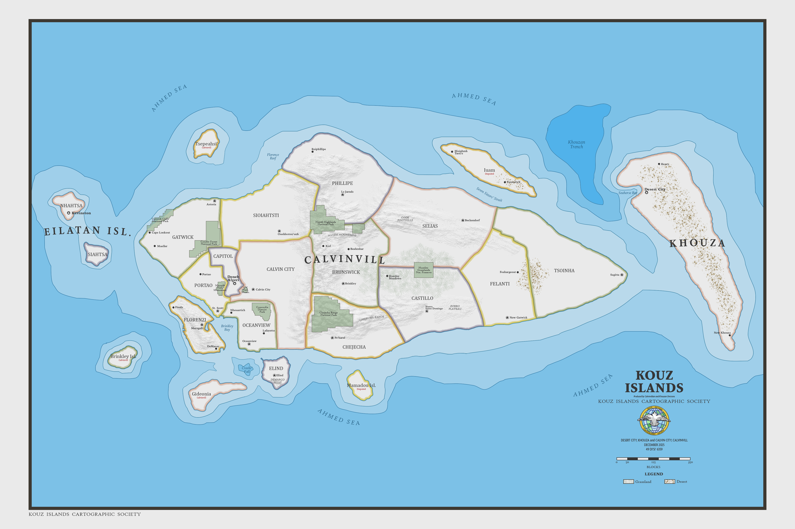
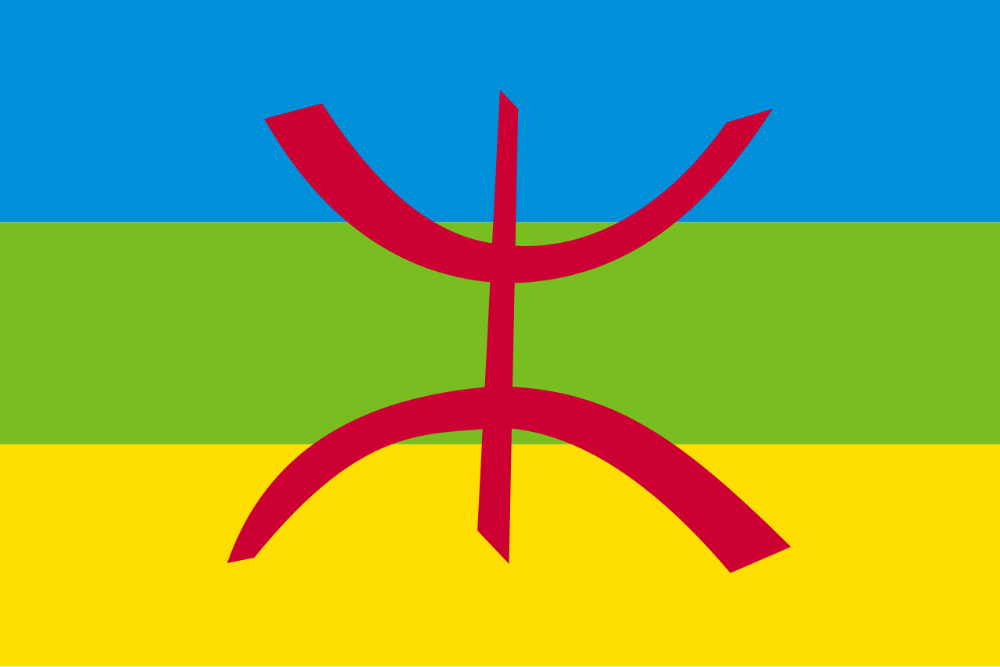
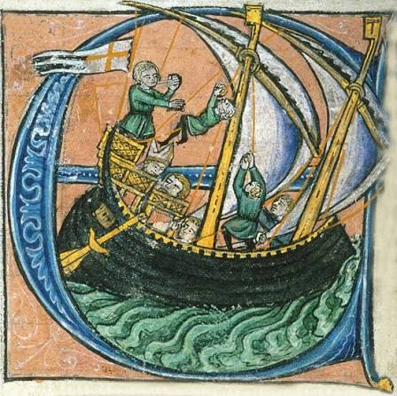

History of the Kouz Islands

Contents [show]


The history of the Kouz Islands and often is representative of broader regional and global historical contexts of the Mediterranean region, North Africa, and Southern Europe. Geographically, the Kouz islands are primary composed of modern-day nations of Calvinvill and Khouza and a plurality of smaller islands, some of which are disputed by both nations. Written proof of inhabitance of the islands stretches back to approximately 703 CE (5037 Khouzan Calendar (KC)), where groups of Berbers from the Mahgreb fled Islam and the Umayyad Caliphate. Many people who currently inhabit the region can trace varrying degrees of their lineage back to these migrant Berbers. Through various encounters with regional powers throughout the 11th century, the Islands began to become integrated into the regional economy. . From the 15th century onwards, Portuguese traders had sustained contact with the Berbers of the Islands. As the industrial revolution swept the world, capital owners began to reshape and mature the regions economy. World War I and II reorientated the regions involvement with Europe, emerging from previous isolationist policy. This had profound effects on the culture, demographics, religion, and politics of the Kouz Islands, helping shape the dynamics we know today.
The island now known as Calvinvill was first inhabited by Berber or Amazigh peoples. The Berbers, indigenous to North Africa, particularly modern-day Morocco, Algeria, and Libya, originally spread Westward from the Nile. Around 703 CE (5037 KC), as the Umayyad Caliphate and Islam moved Westward, small groups of Berbers fled into the Mediterranean Sea and discovered the Kouz Islands chain.

See also: Slavery in the Kouz Islands

As Kouz Berbers reconfigured power dynamics, the development of the trans-Saharan slave trade would completely change racial dynamics of the island and exacerbate the newly formed inter-Berber dynamics. The trans-Saharan slave trade revolved around the Arab (or in some cases Berber) transport of people, namely Black sub-Saharan Africans or in other circumstances, mid-eastern people, Persians, and in fewer circumstances, Europeans. In 1147 (5481 KC), a Fatimid cargo vessel named named Lulu transported captive human cargo composed of 100 Portuguese captives, over 20 Persian captives, 11 Mizrahi Jews from the Levant, and a handful of Muslim Berbers. Likely due to poor navigation and weather conditions, the Lulu veered off course and ran ashore on what now is Iuam Island. Upon the wreck of the Lulu, the survivors were found by a clan of Coastal Berbers on Iuam colloquially known as the Isemali. Historians and archaeologists agree that it is likely the enslaved captives banded together in the immediate aftermath of the wreck. The Fatimid sailors and officers, fearing revenge, fled the wreck site. It is disputed, but many believe the Fatimid sailors fled via driftwood or raft, to later wash ashore on the Western Coast of Khouza, later founding Khouza City. The Lulu captives then integrated into various clans while maintaining their respective cultural and religious traditions. In the subsequent decades, there is evidence of an emergence of more hybrid religious and cultural practices, forming the origins of Khouzan religion.
In the late Middle Ages, the growth of the Spanish Empire and Maritime republics caused